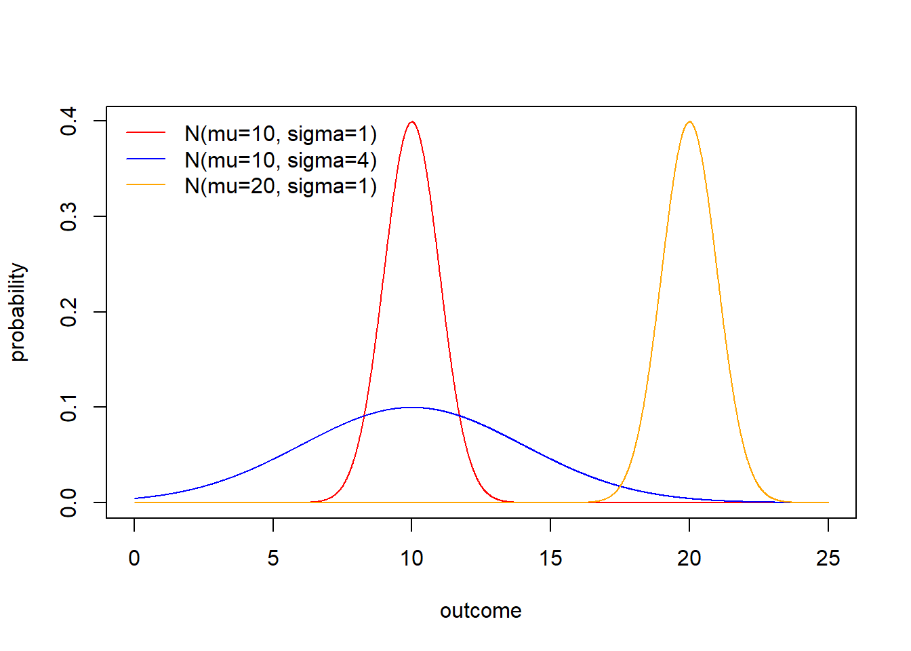
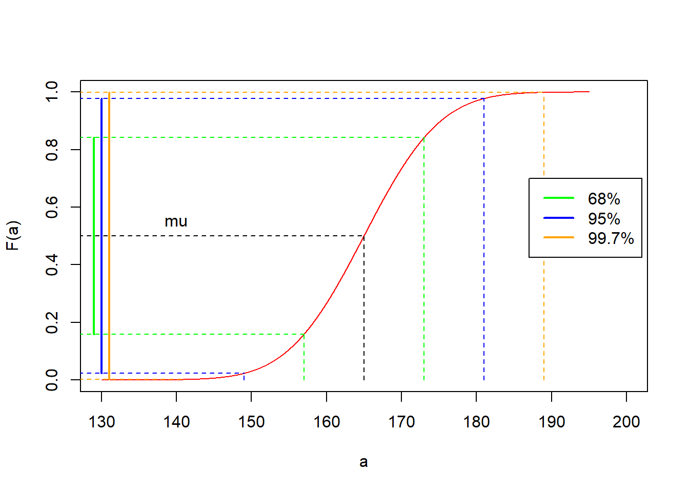
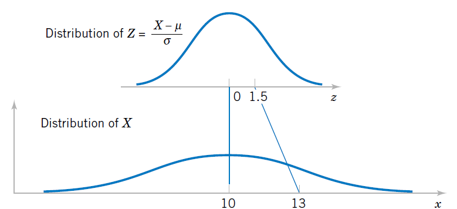

Chapter 9 Normal Distribution
9.1 Objective
In this chapter we will introduce the normal probability distribution.
We will discuss its origin and its main properties.
9.2 History
In 1801 Gauss analyzed data obtained for the position of the Ceres, a large asteroid between Mars and Jupiter.
At the time people suspected it was a new planet, as it moved day to day against the fixed stars. In January, it could be seen at the horizon just before dawn. However, as days passed Ceres will rise latter and latter until it could not longer be seen because of the Sun rise.
Gauss understood that the measurements for the position of Ceres had errors.
He was therefore interested in finding how the observations were distributed so he could find the most likely orbit. With the orbit, we could derive the mass of the object and then decide whether it was a planet or a big asteroid.
Data was available only for the month of January. After which Ceres would disappear. He wanted to predict where astronomers should point their telescopes to find it six months after at dusk, once it had passed behind the Sun.
Gauss had to account for the errors in the position of ceres at a given day due to measurement

Gauss supposed that
small errors were more likely than large errors
the error at a distance \(-\epsilon\) from the value at the position of Ceres was equally likely as a distance \(\epsilon\)
the most likely (that we believe) of Ceres at any given time in the sky was the average of multiple altitude measurements at that latitude.
That was enough to show that the deviations of the observations \(y\) from the orbit satisfied the equation
\[\frac{df(y)}{dy}=-Cyf(y)\] with \(C\) a positive constant. The solution of this differential equation is:
\[f(y)=\frac{\sqrt{C}}{\sqrt{2\pi}}e^{-\frac{Cy^2}{2}}\]
*The evolution of the normal distribution, Saul Stahl, Mathemetics Magazine, 2006.
9.3 normal density
Gaussian probability density gives the distribution of measurement errors from the actual but unknown position of Ceres in the sky. Let’s make a couple of changes to the function.
1- Let’s write the error density from the horizon using the random variable \(X\), that is, \(y=x-\mu\). \(\mu\) is the actual but unknown position of Ceres from the horizon. After a change of variable we find the probability density function:
\[f(x)=\frac{\sqrt{C}}{\sqrt{2\pi}}e^{-C(x-\mu)^2}\]
- Let’s rename the variable \(C\) to \(\frac{1}{\sigma^2}\)
So, we arrive at the following definition.
9.4 Definition
A random variable \(X\) defined on the real numbers has a density Normal if it takes the form
\[f(x; \mu, \sigma^2)=\frac{1}{\sqrt{2\pi}\sigma}e^{-\frac{(x-\mu)^2}{2\sigma^2}}, x \in {\mathbb R}\]
The variable has
- mean
\[E(X) = \mu\]
which for Gauss represented the actual position of Ceres.
- and variance \[V(X) = \sigma^2\]
which represented the dispersion of the error in the observations, which depends on the quality of the telescope.
\(\mu\) and \(\sigma\) are the two parameters that completely describe the normal density function and their interpretation depends on the random experiment.
When \(X\) follows a Normal density, that is, it is normally distributed, we write
\[X\rightarrow N(\mu,\sigma^2)\]
Let’s look at some probability densities in the normal parametric model

9.5 Probability distribution
The probability distribution of the Normal density:
\[F_{normal}(a)=P(Z \leq a)\]
is the error function defined by the area under the curve from \(-\infty\) to \(a\)
\[F_{normal}(a)=\int_{-\infty}^{a}\frac{1}{\sqrt{2\pi}\sigma}e^{-\frac{(x-\mu)^2}{2\sigma^2}} dx\] The function is found in most computer programs, and it does not have a closed form of known functions.
Example (women’s height)
- What is the probability that a woman in the population is at most \(150cm\) tall if women have a mean height of \(165cm\) with standard deviation of \(8cm\)?
\(P(X\le 150)=F(150, \mu=165, \sigma=8)=0.03039636\)
in R pnorm(150, 165, 8)
- What is the probability that a woman’s height in the population is between \(165cm\) and \(170cm\)?
\(P(165 \le X \le 170)=F(170, \mu=165, \sigma=8)-F(165, \mu=165, \sigma=8)=0.2340145\)
in R pnorm(170, 165, 8)-pnorm(165, 165, 8)
Let’s look at the probability distribution function

- What is the first quartile for height in women?
The first quartile is defined as:
\(F(x_{0.25}, \mu=165, \sigma=8)=0.25\)
or
\(x_{0.25}=F^{-1}(0.25, µ=165, \sigma=8)=159.6041\)
in R qnorm(0.25, 165, 8)
Properties of the Normal distribution
the mean \(\mu\) is also the median as it splits the measurements in two
\(x\) values that fall farther than 2\(\sigma\) are considered rare \(5\%\)
\(x\) values that fall farther than 3\(\sigma\) are considered extremely rare \(0.2\%\)

Example (women’s height)
We can define the limits of common observations for the distribution of women’s height in the population.
- at a distance of one standard deviation from the mean, we find \(68\%\) of the population
\[P(165-8 \leq X \leq 165+8)=P(157 \leq X \leq 173)=F(173)-F(157)=0.68\]
- at a distance of two standard deviations from the mean, we find \(95\%\) of the population
\[P(165-2 \times 8 \leq X \leq 165+2\times 8)=F(181)-F(149)=0.95\]
- at a distance of three standard deviations from the mean, we find \(99.7\%\) of the population
\[P(165-3 \times 8 \leq X \leq 165+3\times 8)=F(189)-F(141)=0.997\]

9.6 Standard normal density
The standard normal density is the particular density from the normal family
\[f(x; \mu, \sigma^2)=\frac{1}{\sqrt{2\pi}\sigma}e^{-\frac{(x-\mu)^2}{2\sigma^2}}, x \in {\mathbb R}\]
It is therefore the density with
- mean
\[E (X)= \mu = 0\]
- and variance
\[V (X)= \sigma^2 =1\]
When a random variable follows a normal probability density, we say that it distributes normally and write
\[X \rightarrow N(0,1)\]
9.7 Standard distribution
The probability distribution of the standard density:
\[\phi(a)=F_{N(0,1)}(a)=P(Z \leq a)\]
is the error function defined by
\[\phi(a)=\int_{-\infty}^{a} \frac{1}{\sqrt{2\pi}}e^{-\frac{z^2}{2}} dz\]
Because the standard distribution is special and will appear often then we use the letter \(\phi\) for it.

You can find it in most computer programs. in R is pnorm(x) with the default parameters, 0 and 1.
We usually define the limits of the most common observations for the standard variable

- The interquartile range \[P(-0.67 \leq X \leq 0.67)=0.50\]
in R: c(qnorm(0.25), qnorm(0.75))
- \(95\%\) range \[P(-1.96 \leq X \leq 1.96)=0.95\]
in R: c(qnorm(0.025), qnorm(0.975))
- \(99\%\) range \[P(-2.58 \leq X \leq 2.58)=0.99\]
in R: c(qnorm(0.005), qnorm(0.995))

9.8 Standardization
All normal variables can be standardized. This means that if \(X \rightarrow N(\mu, \sigma^2)\), then we can transform the variable to a standardized variable
\[Z=\frac{X-\mu}{\sigma}\]
which will have density:
\[f(z)=\frac{1}{ \sqrt{2\pi}}e^{-\frac{z^2}{2}} \] Therefore, for any \(X \rightarrow N(\mu, \sigma^2)\)
\[Z=\frac{X-\mu}{\sigma} \rightarrow N(0, 1) \]

You can demonstrate this by replacing \(x=\sigma z+\mu\) and \(dx=\sigma dz\) in the probability expression we have
\(P(x\leq X \leq x +dx)=P(z\leq Z \leq z +dz)\) \[=\frac{1}{\sqrt{2\pi}\sigma}e^{-\frac{(x-\mu)^2}{2\sigma^2}}dx\] \[=\frac{1}{ \sqrt{2\pi}}e^{-\frac{z^2}{2}} dz\]
The probability of any normal variable \(X\rightarrow N(\mu, \sigma^2)\) can be computed using the standard distribution
\(F(a)=P(X<a)=P(\frac{X-\mu}{\sigma}<\frac{a-\mu}{\sigma})\) \[=P(Z < \frac{a-\mu}{\sigma})= \phi \big(\frac{a-\mu}{\sigma}\big)\]
For computing \(P(a\leq X \leq b)\), we can use the property of the probability distributions
\(F(b)-F(a)=P(X\leq b)-P(X\leq a)\)
\[=\phi \big(\frac{b-\mu}{\sigma}\big)-\phi \big(\frac{a-\mu}{\sigma}\big)\]
9.9 Summary of probability models
| Model | X | range of x | f(x) | E(X) | V(X) |
|---|---|---|---|---|---|
| Uniform | integer or real number | \([a, b]\) | \(\frac{1}{n}\) | \(\frac{b+a}{2}\) | \(\frac{(b-a+1)^2-1}{12}\) |
| Bernoulli | event A | 0,1 | \((1-p)^{1-x}p^x\) | \(p\) | \(p(1-p)\) |
| Binomial | # of A events in \(n\) repetitions of Bernoulli trials | 0,1,… | \(\binom n x (1-p)^{n-x}p^x\) | \(np\) | \(np(1-p)\) |
| Negative Binomial for events | # of B events in Bernoulli repetitions before \(r\) As are observed | 0,1,.. | \(\binom {x+r-1} x (1-p)^xp^r\) | \(\frac{r(1-p)}{p}\) | \(\frac{r(1-p)}{p^2}\) |
| Hypergeometric | # A events in a sample \(n\) from population \(N\) with \(K\) As | \(\max(0, n+K-N)\), … \(\min(K, n)\) | \(\frac{1}{\binom N n}\binom K x \binom {N-K} {n-x}\) | \(n*\frac{N}{K}\) | \(n \frac{N}{K} (1-\frac{N}{K})\frac{N-n}{N-1}\) |
| Poisson | # of events A in an interval | 0,1, .. | \(\frac{e^{-\lambda}\lambda^x}{x!}\) | \(\lambda\) | \(\lambda\) |
| Exponential | Interval between two events A | \([0,\infty)\) | \(\lambda e^{-\lambda x}\) | \(\frac{1}{\lambda}\) | \(\frac{1}{\lambda^2}\) |
| Normal | measurement with symmetric errors whose most likely value is the average | \((-\infty, \infty)\) | \(\frac{1}{\sqrt{2\pi}\sigma}e^{-\frac{(x-\mu)^2}{2\sigma^2}}\) | \(\mu\) | \(\sigma^2\) |
9.10 R functions of probability models
| Model | R |
|---|---|
| Uniform (continuous) | dunif(x, a, b) |
| Binomial | dbinom(x,n,p) |
| Negative Binomial for events | dnbinom(x,r,p) |
| Hypergeometric | dhyper(x, K, N-K, n) |
| Poisson | dpois(x, lambda) |
| Exponential | dexp(x, lambda) |
| Normal | dnorm(x, mu, sigma) |
9.11 Questions
1) It is not true that for a normally distributed variable
\(\qquad\)a: its mean and median are the same; \(\qquad\)b: the standard probability distribution can be used to compute its probabilities; \(\qquad\)c: its interquartile range is twice its standard deviation; \(\qquad\)d: \(5\%\) of its observations are a distance greater than twice its standard deviation
2) For a normal standard variable
\(\qquad\)a: \(50\%\) of its observations are between \((-0.67,0.67)\); \(\qquad\)b: \(2\%\) of its observations are lower than \(-2.58\); \(\qquad\)c: \(5\%\) of its observations are greater than \(1.96\); \(\qquad\)d: \(25\%\) of its observations are between \((-1.96,-0.67)\)
3) if we know that \(\phi(-0.8416212)=0.2\) then what is \(\phi(0.8416212)\)
\(\qquad\)a: \(0.1\); \(\qquad\)b: \(0.2\); \(\qquad\)c: \(0.8\); \(\qquad\)d: \(0.9\)
4) the third quartile of a normal variable with mean \(10\) and standard deviation \(2\) is
\(\qquad\)a: qnorm(1/3, 10, 2)=9.138545;
\(\qquad\)b: qnorm(1-0.75, 10, 2)=8.65102 ;
\(\qquad\)c: qnorm(1-1/3, 10, 2)=10.86145 ;
\(\qquad\)d: qnorm(0.75, 10, 2)= 11.34898
5) probability that a normal variable with mean \(10\) and standard deviation \(2\) is in \((-\infty,10)\) is
\(\qquad\)a: 0.25; \(\qquad\)b: 0.5; \(\qquad\)c: 0.75; \(\qquad\)d: 1:
9.12 Exercises
9.12.0.1 Exercise 1
Find the area under the standard normal curve in the following cases:
- Between \(z=0.81\) and \(z=1.94\) (R:0.182)
- To the right of \(z=-1.28\) (R:0.899)
- To the right of \(z=2.05\) or to the left of \(z=-1.44\) (R:0.0951)
9.12.0.2 Exercise 2
What is the probability that a man’s height is at least \(165\)cm if the population mean is \(175\)cm y the standard deviation is \(10\)cm? (R:0.841)
What is the probability that a man’s height is between \(165\)cm and \(185\)cm? (R:0.682)
What is the height that defines the \(5\%\) of the smallest men? (R:158.55)